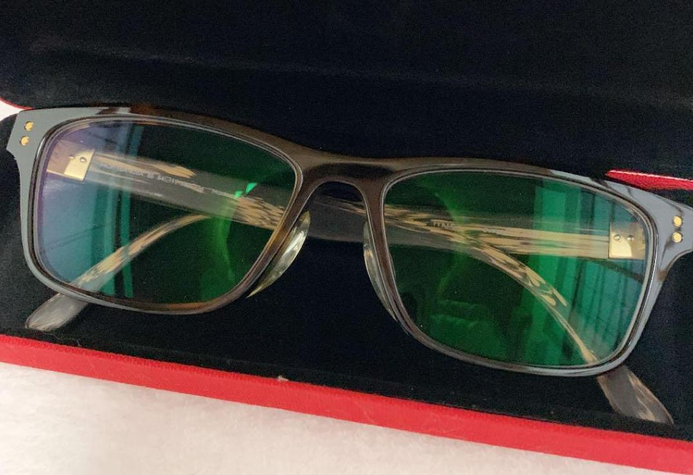
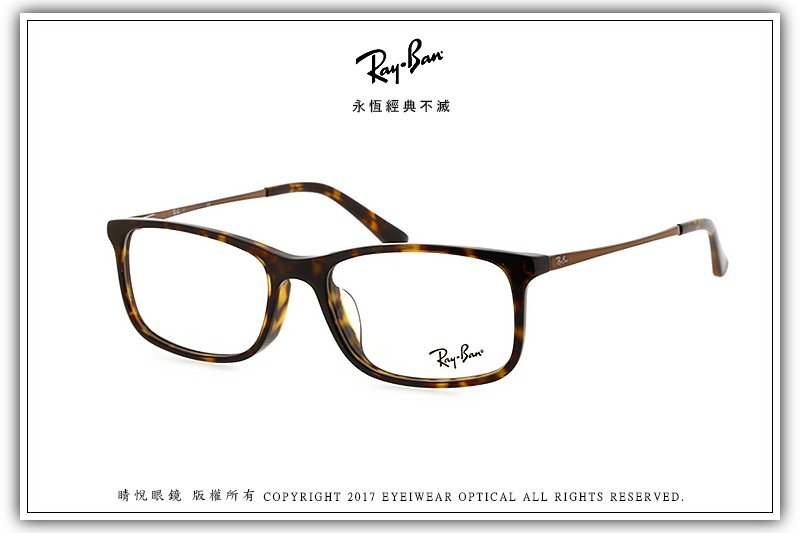
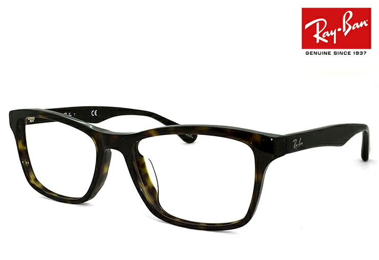
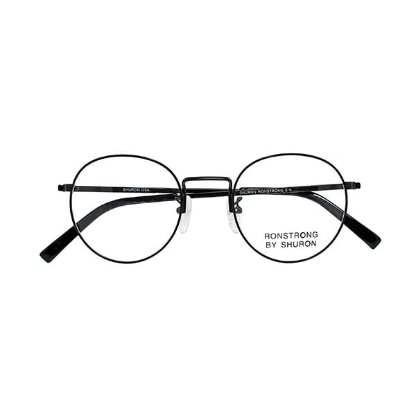
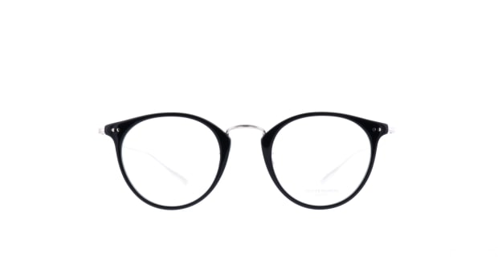
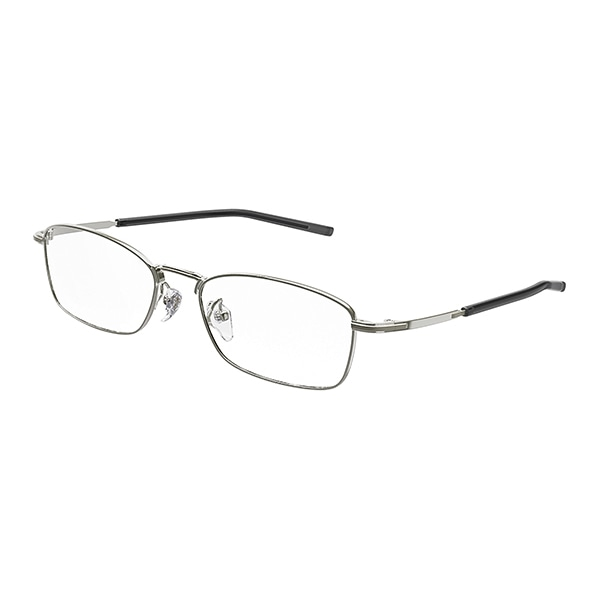
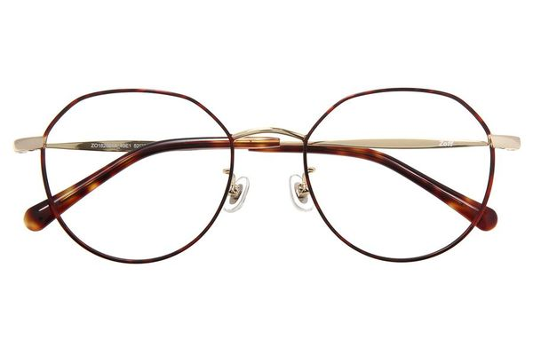

MY glasses collection.
私が今までに購入したメガネコレクション
顔の印象を大きく左右するため、様々なシチュエーションに合わせたフレームやデザインがあります
メガネコレクション

高校生の頃に購入したJINSのメガネ。
一番付き合いが長いこともあり現在でも愛用している。
現在では主に自宅で使用しておりお風呂にもつけています

就職祝いに両親に買ってもらったレイバンのメガネ。
コンビネーションフレームのためかっこいい。
現在は主に外出時につけるが最近の出番は少ない

ネットで思いつきで購入したメガネであり、レイバンのザ・黒縁メガネ。
ネットで安かったため購入したが鼻パッドが外国人仕様になっており、
鼻が低い僕には眼鏡をつけるとずり落ちてきてしまう。
眼鏡屋さんにて鼻パッド部分を肉盛りしてもらい合うようになりました。
ネットでのメガネの購入には注意。外出時に使用しています。

SHURONのRONSTRONGという人気フレーム。
埼玉に住んでいた時代に一人で電車に乗り渋谷まで買いに行ったメガネです。
つけるとクラシックな雰囲気になり、とても良い。

人気ブランド、オリバーピープルのメガネ
持っているメガネの中で一番のお気に入りメガネです。
埼玉時代に奮発して購入したメガネであり、外出時や家でもよく付けます。

999.9(フォーナインズ)のメガネ。
日本人の鼻に合うよう設計されたメガネの為、長時間つけていても全く疲れない。
主に仕事用で使用しており、メガネをつけると仕事ができそうなキリッとした印象になる。

最近購入したゾフのメガネ。
クラウンパントという特殊な形をしており、これもお気に入りのメガネ。
黒メガネばかり購入していたが、勇気を出してゴールドの眼鏡を購入しました。